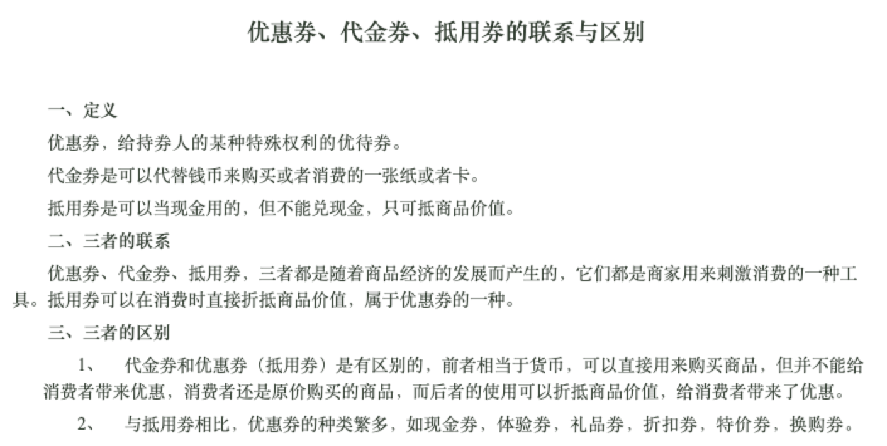

https://github.com/aalansehaiyang/technology-talk/blob/master/system-architecture/architecture-good-case.md分库分表每日百万订单，这样的技术方案更靠谱数据迁移数据迁移，不停机上线的正确姿势微服务的毒服务化带来的问题，我们是如何解决的服务化带来的问题---之数据迁移经历服务化带来的数据一致问题---分布式事务，事务型消息熔断的意义和适用场景，你真的清楚吗？微服务化后，这几点一定要注意系统设计订单系统产品 SKU 是什么意思？与之相关的还有哪些？ - 知乎订单系统：从0到1设计思路如何设计一套完整的订单系统，或者完整的业务流程？ - 知乎如何设计一套完整的订单系统，或者完整的业务流程？ - 知乎百万级订单系统最佳实践 - 墨天轮高性能平台设计—美团旅行结算平台实践每秒处理10万高并发订单的乐视集团支付系统架构分享订单管理（OMS）1——下单流程、订单信息、父子订单美团团购订单系统优化记美团外卖订单中心的演进支付系统从0到1设计聚合支付系统（1）前言从0到1设计聚合支付系统（2）总体架构介绍从零“做”个支付系统（一）认识支付系统支付宝等大型支付系统交易额巨大，后台系统是如何对账和风控的呢？ - 知乎支付人必读：一文彻底搞清楚银联和现代支付系统运行过程为什么国外的移动支付没有像国内的支付宝和微信那样普及？ - 知乎一文看懂互联网支付系统架构从入门到精通：关于支付系统设计的 17 篇文网关支付、银联代扣通道、快捷支付、银行卡支付分别是怎么样进行支付的？ - 知乎中国现代化支付系统（CNAPS）和中国银联下面的跨行支付系统是一回事儿吗？ - 知乎多种支付渠道路由方案有哪些？ - 知乎万字长文深度剖析【支付宝】架构秒杀秒杀系统设计～亿级用户秒杀，这是我见过最最实用的技术方案其它微服务应该这么搞，万字长文谈微服务经历！万字长文，结合电商支付业务一文搞懂DDD一文读懂，DDD落地数据库设计实战Introduction · 系统设计(System Design)https://www.youtube.com/channel/UCjm_qVkCPjOVDz9BWjNqO9Ahttps://www.youtube.com/watch?v=MbjObHmDbZo程序员如何提高系统设计的能力？ - 知乎程序员如何提高系统设计的能力？ - 知乎程序员如何提高系统设计的能力？ - 知乎百亿规模API网关服务Shepherd的设计与实现粉丝关系链，10亿数据，如何进行分库分表设计？业务中需要查询某个人的粉丝列表、某个人的关注列表。好好研究下微博的功能实现新浪微博数据库是如何设计的？ - 知乎新浪微博「点赞功能」数据库如何设计的？ - 知乎分布式系统设计-短连接服务设计